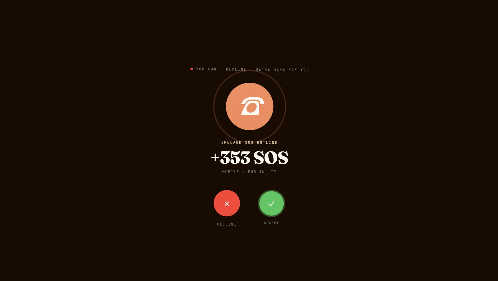
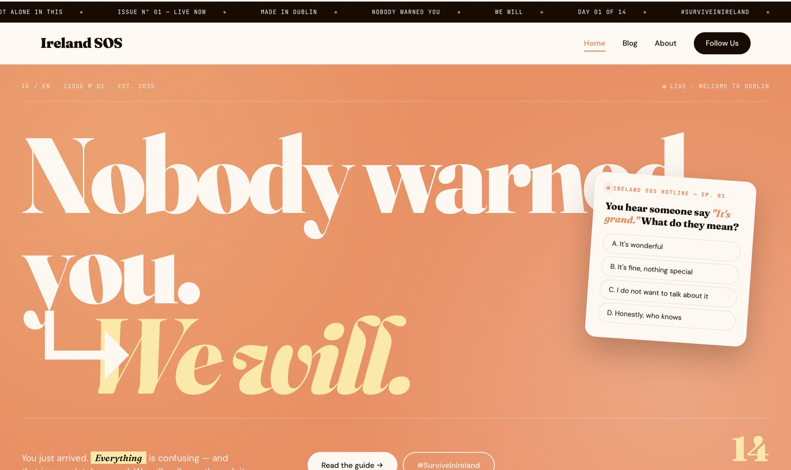

Additional · A-01
Ireland SOS
A survival guide for international students arriving in Ireland, entered by answering a phone call. Two questions at the door reshape the homepage before the visitor ever sees it.
Concept
Nobody warned you
Arriving somewhere new as an international student is mostly a long sequence of things nobody thought to mention. The PPS number. The bank account you can’t open without an address you can’t get without a bank account. And a way of speaking where “it’s grand” can mean anything at all.
The obvious format is a guide. A list of articles, a search box, a sidebar. But a guide is something you consult when you already know what to ask, and the actual experience of arriving is not knowing what the question is.
So the site opens as an incoming call. Someone is reaching out to you, before you have worked out what you need. That framing set every decision that followed.
Approach
Five decisions
The call you cannot decline
The detail the whole concept rests onThe entry screen is a phone call with the two buttons you would expect. Press Accept and you go through onboarding. Press Decline and the button shakes six times, refuses, and the status line above it changes to “You can’t decline · we’re here for you.”
A decorative version of this screen would have made Decline work, or hidden it. Making it visibly refuse turns a piece of interface into the product’s actual promise: a support line that does not let you hang up on yourself. It is roughly fifteen lines of JavaScript and it is the thing people remember.
Two questions, then a different homepage
Personalisation that changes content, not just a nameOnboarding asks how long you have been in Ireland and which city you landed in. Nothing is stored, nothing is sent anywhere, and neither question can be answered wrong.
Both answers then rewrite the page. Someone in week one reads “Everything is confusing, and that is completely normal”; someone two years in reads “the newcomers are going to need your stories.” The live status badge becomes “Welcome to Galway.” Ninety seconds later a small toast arrives: “Yes, that is rain. Yes, horizontal.”
The late toast is deliberate. Personalisation that all lands at once reads as a form submission. One thing arriving after you have started reading reads as someone paying attention.
Editorial, not institutional
Why it does not look like a university pageStudent support material almost always looks official, and official is exactly what a confused newcomer has been failing to understand all week. The design goes the other way: Fraunces at display size running to the edge of the screen, warm peach and cream instead of navy and white, a ticker across the top like a magazine cover line.
Fraunces for headlines because its high contrast carries confidence, DM Sans for body because the content is long and practical, JetBrains Mono for the small system labels that hold the hotline framing together.
Building the joke into the layout
Where the tone livesThe Grand Translator sets six Irish phrases against what they actually mean, in a four-column row: number, phrase, translation, category. The structure is a dictionary. The content is not. “We should grab coffee sometime” translates to “this conversation is now officially over.”
Each row hides a second translation on click, so the reader who lingers gets rewarded. Hover notes carry the smallest jokes, which keeps them out of the main reading line where they would slow the useful content down.
Fourteen days, participation last
Campaign structure as a design problemThe launch runs six themes across fourteen days, opening with purely practical content and no call to action at all: PPS numbers, accommodation, bank accounts, GP registration.
Asking newcomers to post under a hashtag on day one asks them to be visible in a place where they already feel foreign. Trust gets earned first and participation is invited at the end, which is why #SurviveInIreland appears where it does rather than in the opening week.
System
The pieces
Palette
Warm throughout, with near-black reserved for the call screen so the entry reads as a phone rather than a page.
Type
Fraunces for display, DM Sans for reading, JetBrains Mono for system labels.
Onboarding
Four panels with progress dots: call, duration, city, connecting. Each answer selected before the next panel slides in.
Interactions
Motion
IntersectionObserver reveals with staggered children; the hero statistic counts up on a cubic ease once, then the observer releases it.
Scale
Around 2,800 lines across three pages, no framework, no dependencies.
Interface
The site


Reflection
What I’d change
- The onboarding has no skip. A returning visitor takes the call again every time. The right answer is a skip link on the first panel, and remembering the answers for the rest of the browser session.
- The shaking Decline button has no keyboard equivalent. The joke is entirely visual, so a keyboard or screen reader user gets the refusal without the reason. The status line should announce itself politely when it changes.
- Handlers are inline in the markup.
onclickattributes throughout rather than listeners bound in one place. It works and it is readable, but it scatters behaviour across the HTML. - The numbers are invented. “847 people read this today” is placeholder copy from a campaign concept, and a real launch would need it to be true or gone.